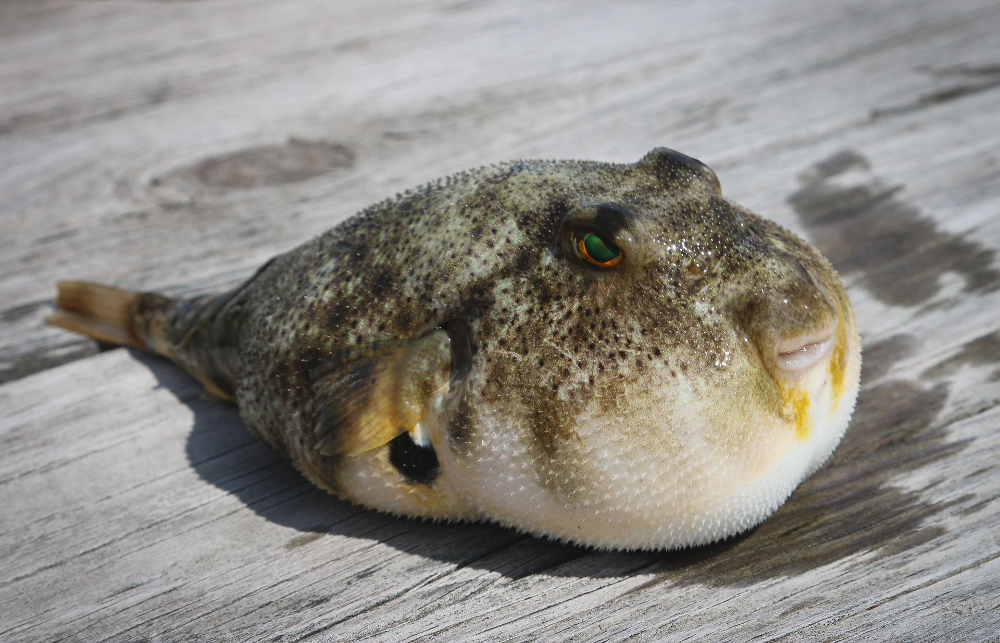
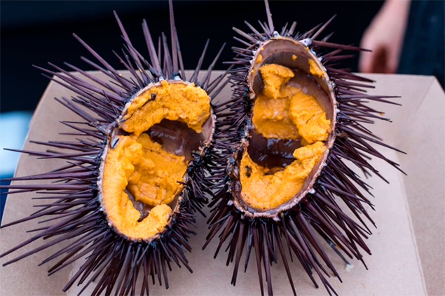
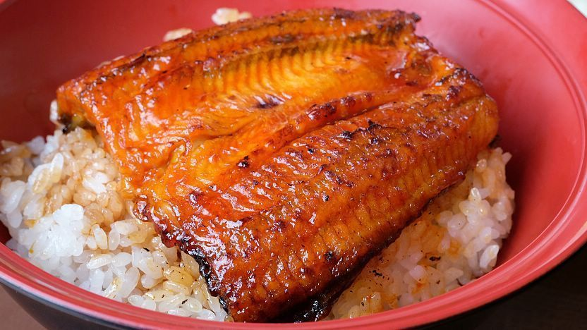
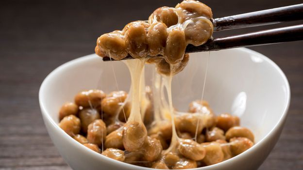
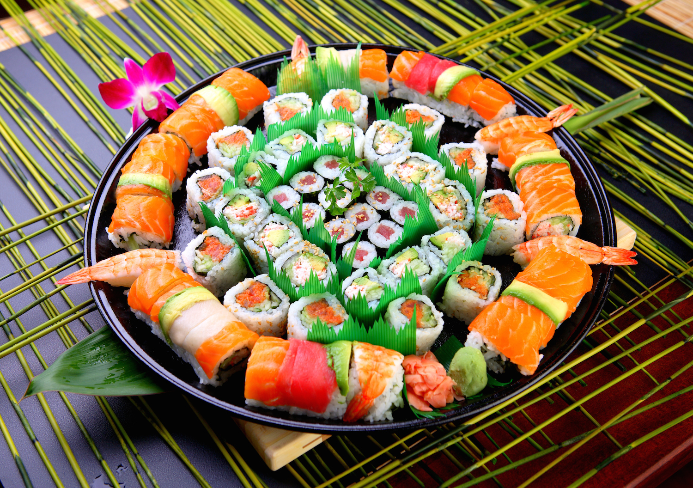

日本
日本Японська кухня славиться своєю різноманітністю та унікальними смаками. Вона включає велику різноманітність морепродуктів. Японці їдять багато видів риб, кальмарів, омарів, морських водоростей та інших морських продуктів. Існує понад 3 000 видів морських водоростей у Японії, які додаються до багатьох страв. Її рецепти і технології готування піддавалися багатьом впливам, включаючи китайську, корейську та західну кухні. Проте, деякі з інгредієнтів та страв можуть здатися незвичайними або навіть шокуючими для багатьох людей за межами Японії.
Одним з найбільш незвичайних страв є фугу. Ця риба містить сильний отрутний гідротетраксін, що може бути летальним для людини, якщо її неправильно приготують. Проте, в Японії ця риба є дуже популярною і різноманітними способами готується, включаючи варіння, смаження та сирі страви. Щоб забезпечити безпеку, ресторани повинні мати спеціальну ліцензію, щоб готувати та подавати цю рибу. А японським кухарям для того щоб готувати рибу фугу, доводиться навчатися не менше 2 років.

Ще одним незвичайним інгредієнтом є уні, який є м'якоттю морського їжака. Він зазвичай використовується як інгредієнт в суші та інших японських стравах. Уні є популярним інгредієнтом в японських суші та сашімі, де він використовується як начинка. Його також можна знайти в різноманітних стравах, таких як уні-дон, уні-рамен та інші. Уні має неповторний смак, схожий на морські водорості з легкими нотками масла та меду.
Іншим цікавим інгредієнтом є унагі, або прісноводний вугор. Він дуже популярний в Японії та зустрічається в багатьох стравах, таких як унагі дон (унагі з рисом) та унагі-нігірі (унагі на шматочку рису).
Крім того, ще одним дивним продуктом є ікура - ікра лосося. Але в Японії вона не така звична, як в Європі чи в США. У японській кухні ікура зазвичай подається як прикраса для суші, ролів та інших страв, що робить їх ще більш привабливими та естетичними.
Натто - це страва, що виготовляється зі спеціальних ферментованих соєвих бобів, які мають клейку консистенцію та сильний запах. Натто зазвичай подається з рисом, ікрою та зеленню, і має значну кількість білка та інших корисних поживних речовин. Ця страва є важливою частиною японського сніданку та може бути знайдена в багатьох ресторанах та магазинах.
Також, хоча суші є найвідомішою стравою японської кухні в усьому світі, насправді вони не є найбільш популярною стравою у Японії. Більшість японців їдять суші тільки в особливі дні, такі як святкування або обід в ресторані.
І нарешті, японська кухня багата не тільки на смаколики, але й на культуру та традиції. Страви часто прикрашаються традиційними японськими мотивами, які символізують природу, сезон або свято. Наприклад, зелений колір суші асоціюється з літом, а морква та гарбузова начинка - зі святом осені. Їжа також подається на красивих посудинах, включаючи керамічні миски, бамбукові тарілки та дерев'яні дошки.
Японці дуже пильні до деталей при готуванні страв, а саме - до того, як їжу подають і її вигляду. Також, якщо ви їстимете в японському ресторані, не забувайте про етикет. Не ставте палички вертикально в рисі, бо це символізує японський обряд померлих, і не пересипайте сіль на їжу, бо це приносить нещастя.